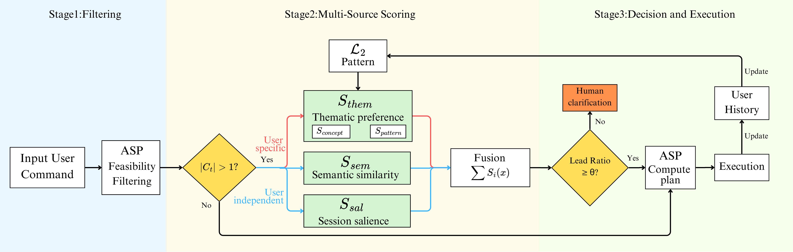
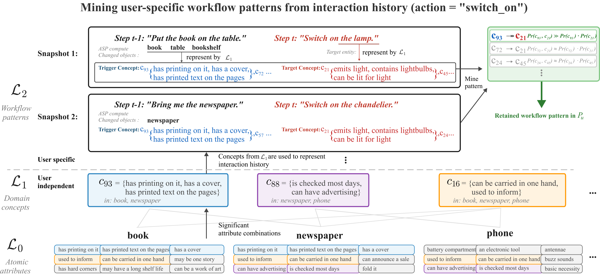

Abstract
AI agents are increasingly being developed to assist humans in various applications, and Large Language Models and other deep network architectures are considered to be state of the art for such agents. These methods are impressive stochastic predictors, but they are resource-hungry, opaque, and known to make arbitrary decisions in novel situations due to the narrow set of underlying representation and processing choices. Our work seeks to explore the design of architectures for such AI agents based on core principles that can be traced back to the early pioneers of AI but are not fully utilized in modern AI methods. We do so in this paper in the context of the core problem of AI agents addressing ambiguity in the objects being referred to by the human participants. Humans address such ambiguity by heuristically leveraging compositional knowledge of domain context and the preferences of the other human participants. Drawing inspiration from this observation, we describe an architecture that embeds the principle of hierarchical compositionality and uses simple heuristics to achieve the desired disambiguation. Specifically, domain objects are represented in terms of primitive attributes drawn from human-validated semantic feature norms, and a hierarchical combination of attributes and concepts automatically identified from a limited observed history of interactions of an assistive agent with specific users. The assistive agent then achieves the desired disambiguation by reasoning with knowledge of this compositional hierarchy; axioms governing domain dynamics; and models of semantic compatibility, session salience, and user-specific thematic preference, requesting human clarification when necessary. Experiments show that our approach consistently outperforms state of the art data-driven baselines, supporting adaptation to specific user profiles.

Three-stage framework. ASP-based feasibility filtering yields the candidate set; the remaining candidates are scored by fusing semantic similarity, session salience and user-specific thematic preference; the agent then commits or asks for clarification, and the interaction updates the user history.

Three-layered representation. L0 atomic attributes from human-validated feature norms and L1 mined concepts are user-independent; L2 captures user-specific workflow patterns, here the pattern c93 → c21: this user switches on light-emitting entities after handling printed reading material.
Video Presentation
BibTeX
@misc{fu2026hierarchicalcompositionalityassistiveai,
title={Hierarchical Compositionality for An Assistive AI Agent},
author={Tianyi Fu and Mohan Sridharan},
year={2026},
eprint={2608.10330},
archivePrefix={arXiv},
primaryClass={cs.AI},
url={https://arxiv.org/abs/2608.10330},
}